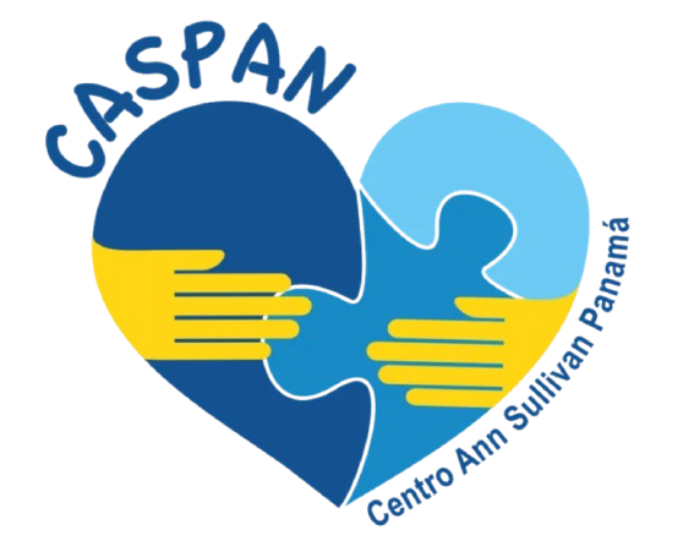
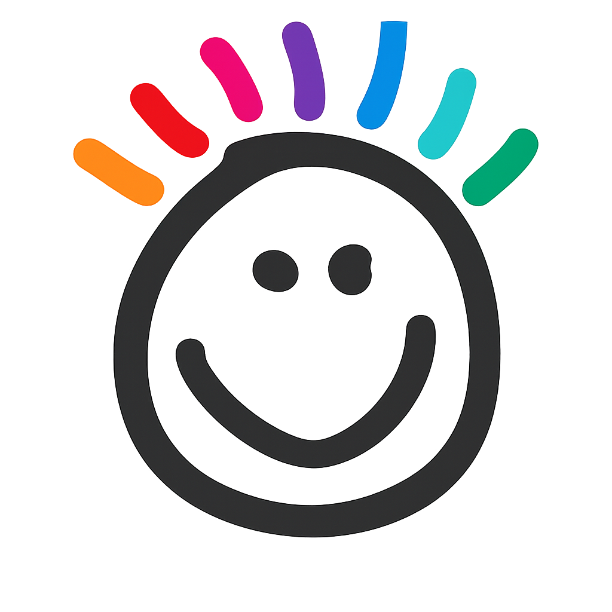
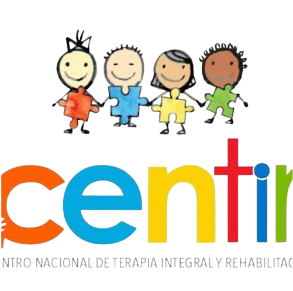
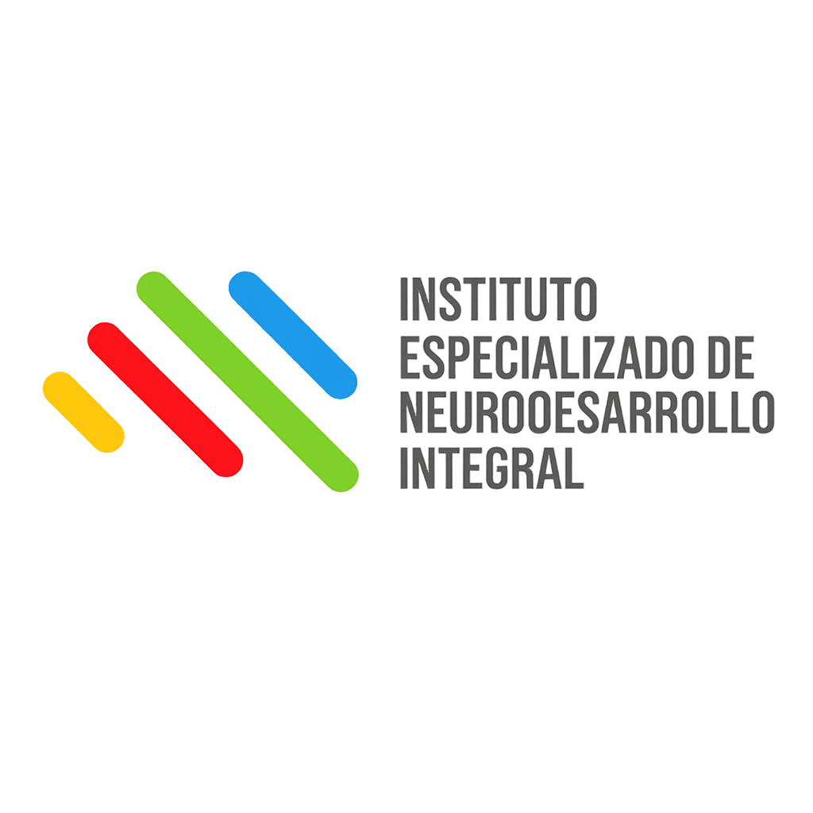

Fundación Soy Capaz

Promueve la inclusión y el desarrollo de habilidades en personas con autismo, especialmente jóvenes y adultos.
Ver ubicaciónFundación Enséñame a vivir

Brinda atención especializada, acompañamiento familiar y programas de apoyo para personas con TEA.
Ver ubicaciónCentro Ann Sullivan Panamá

Ofrece educación y capacitación para fomentar la autonomía e inclusión de personas con discapacidad y autismo.
Ver ubicaciónFundación Valórate

Impulsa la inclusión y el acceso a servicios especializados para personas con necesidades de apoyo diversas.
Ver ubicaciónCENTIR

Apoya a personas con necesidades diversas a través de atención terapéutica y educativa integral.
Ver ubicaciónIENDI

Apoya a niños con trastornos del neurodesarrollo a través de atención especializada.
Ver ubicación